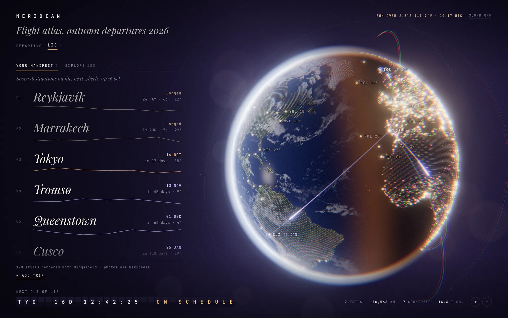
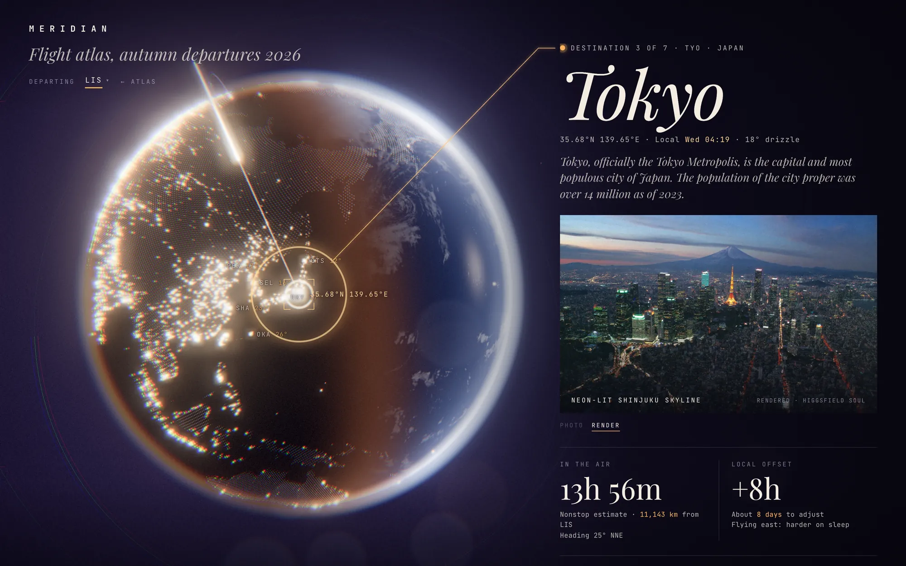
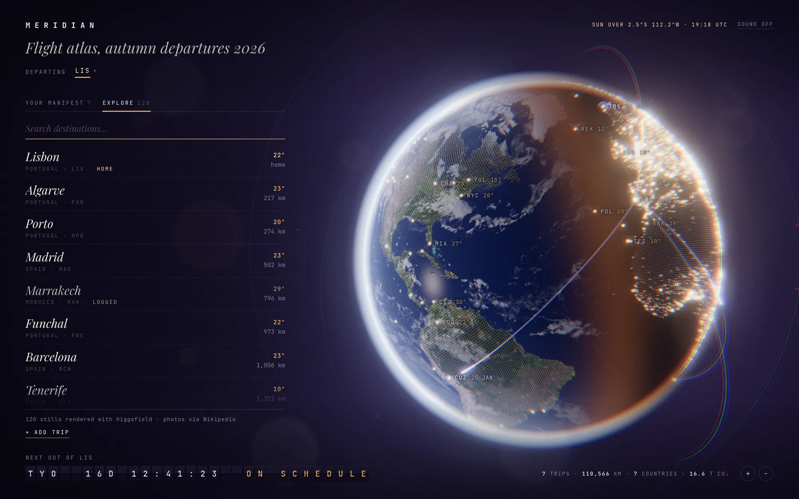
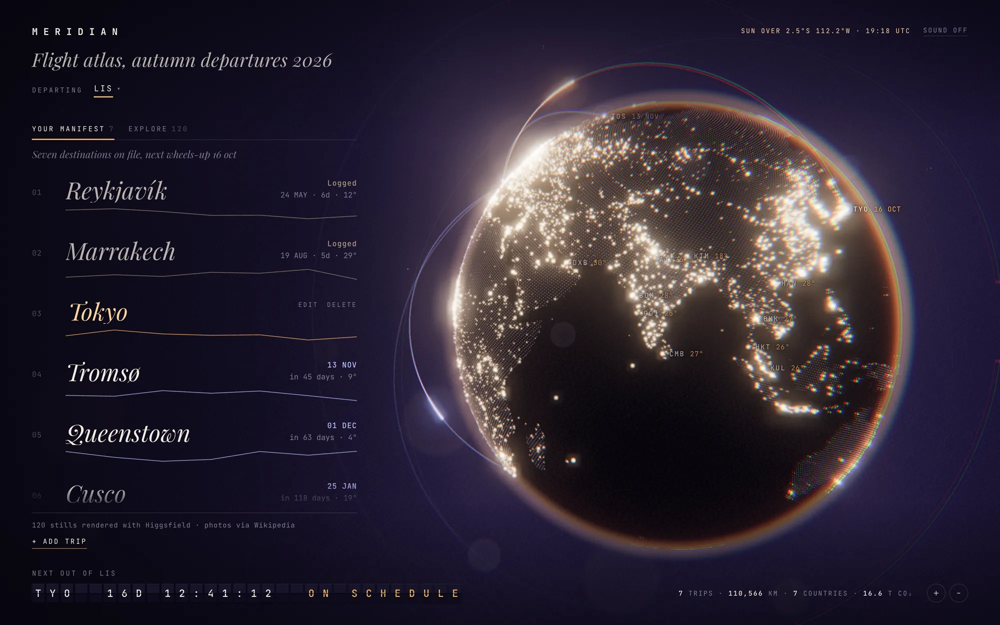
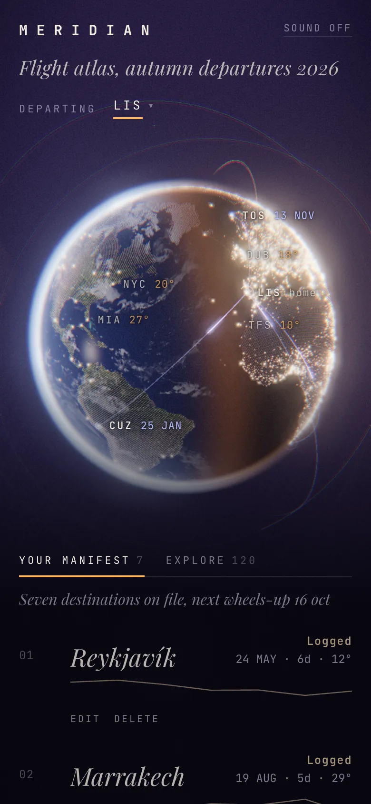
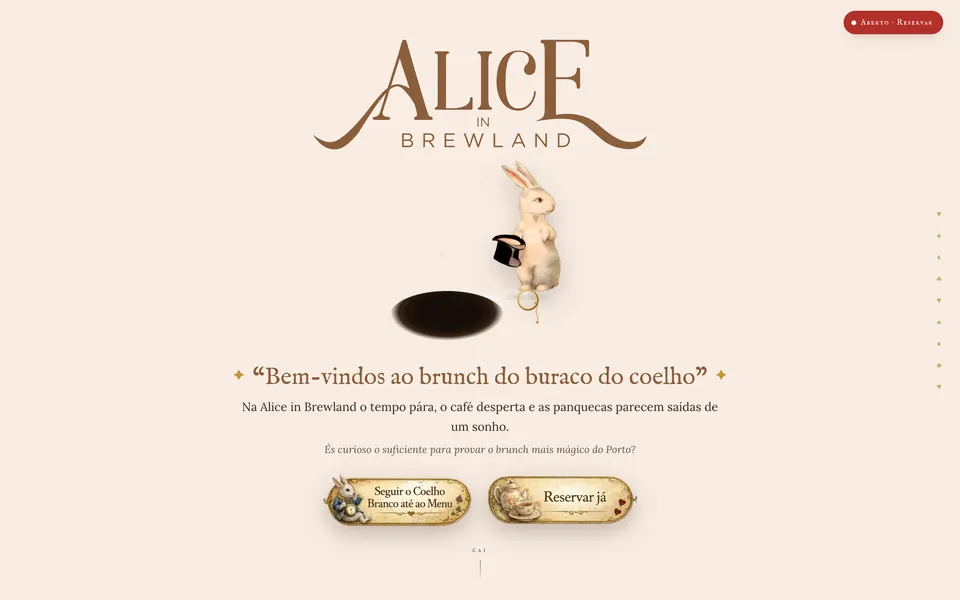

Meridian
Um atlas de viagens com a Terra no centro. A linha entre o dia e a noite segue o sol real, as cidades acendem-se no escuro e cada viagem é um arco a partir de casa.

No centro está a Terra, com a linha entre o dia e a noite a seguir a posição real do sol. No lado escuro acendem-se cerca de 7 300 cidades, e 120 destinos podem ser escolhidos.
As viagens que adicionas desenham-se como arcos de voo a partir do teu aeroporto — um diário de viagem que é também um mapa.
Cada destino abre uma página própria: resumo e fotografia da Wikipedia, tempo de voo, diferença horária, câmbio e a previsão para sete dias. As viagens ficam guardadas no browser de cada visitante, e renders cinematográficos opcionais — imagens fixas e voos de drone — dão a cada lugar o seu plano de cinema.




- ~7 300cidades acesas no lado noturno
- 120destinos, cada um com página própria
- 1sol real a desenhar o dia e a noite
Alice in Brewland
